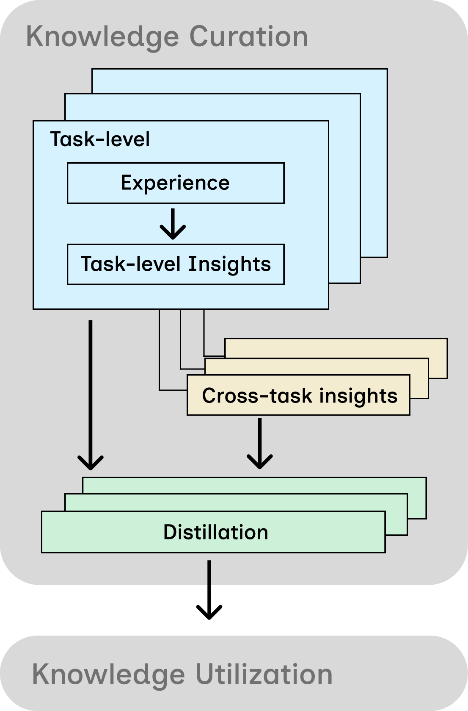
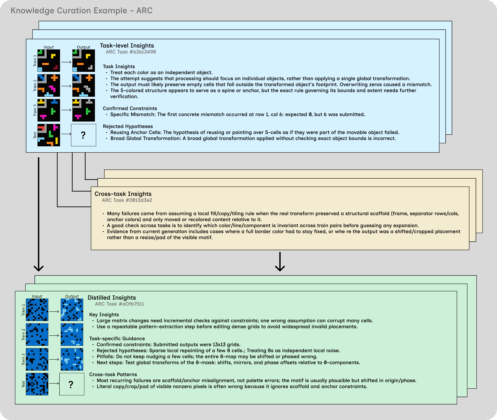
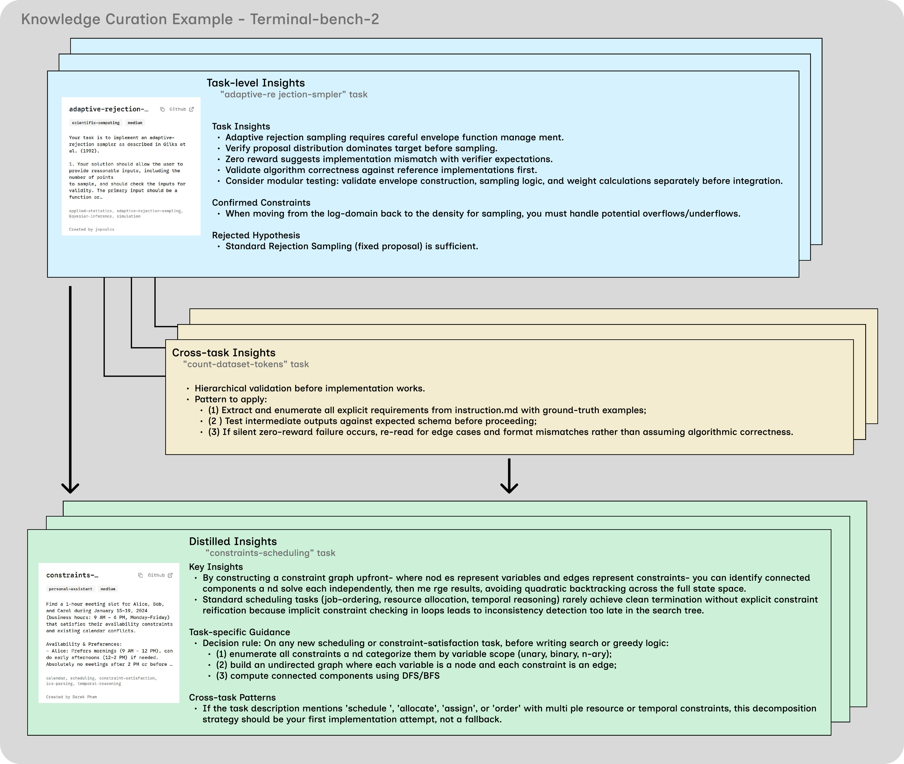

Keep the agents simple and disposable. Let the knowledge base be the thing that improves.
Affiliations withheld during double-blind review
Self-improving AI systems usually improve the agent itself, through prompt and workflow optimization, harness search, or self-modification. This agent-centric improvement can be expensive to maintain and hard to transfer: improvements become tied to a particular agent design, task distribution, or adaptation run. We study a complementary paradigm, knowledge-centric self-improvement, where agents remain disposable and the curated knowledge base improves over time.
We conduct controlled case studies to operationalize this idea via a simple protocol. Agents make attempts on one task, then contribute evidence-grounded insights to a shared knowledge base via task-level and cross-task forums, followed by distillation. Because the central locus of improvement is the knowledge itself rather than the agent, improvement becomes inspectable, transferable, and portable.
Across coding, terminal, and abstract reasoning benchmarks, our system achieves stronger performance with substantially better cost efficiency, compared against agent-centric baselines. The curated knowledge bundle contains genuine insights that can transfer to unseen tasks, and across model families.
These results suggest a promising shift in self-improving agentic systems: progress can be driven not only by the specialization of individual agents, but also by the curated persistent knowledge they leave behind.
Animated three-act diagram of the Knowledge-Centric Self-Improvement protocol. Act one zooms into Generation 8 on Terminal-Bench 2: a stateless generic agent reads the bundle distilled by prior generations, applies the rule "run the verifier yourself" to compile-compcert (a task that had failed seven generations in a row), and finally solves it. The trace's evidence joins a cross-task forum with two sibling polyglot tasks (polyglot-c-py and polyglot-rust-c); distillation produces one new typed bundle row — a high-confidence transferable insight about shared-subset cross-compilation grammar, synthesized from those sibling tasks — which is added as the bundle's eighth layer. Act two is a ten-generation accumulation timelapse that pauses on four milestone generations (1, 4, 7, 8); each milestone names the tasks its rule was synthesized from. The 89-cell task grid fills to 42 solved and the compile-compcert tracker shows seven failed gens then a win at gen eight. Act three closes on Terminal-Bench 2 results — 47.2% with the same Haiku 4.5 backbone, versus OpenHands 13.9%, Terminus 28.3%, Mini-SWE-Agent 29.8% — plus efficiency chips for SWE-bench Pro (84% at $76 per task, roughly six times cheaper than HyperAgents at 42% for $276), ARC-AGI-1 (82% at $46) and Polyglot (80% at $92). The animation auto-plays in a loop; hover or click to pause.
A protocol in which the only object that changes over time is the shared knowledge base, while agents are held fixed as generic, stateless, and intentionally simple. This isolates curated knowledge as the unit of improvement and gives the community a testbed for studying it independently of agent design.
Against strong agent-centric self-improvement baselines — Darwin Gödel Machine (DGM), HyperAgents, and Meta-Harness — generic agents paired with a curated knowledge base achieve higher solve rates across the evaluated benchmarks while spending substantially fewer tokens.
Knowledge bundles curated on a training set improve zero-shot performance on a held-out test set, and bundles curated under one model family remain effective when consumed by another. This is evidence that curation yields an artifact useful beyond the run that produced it.
Each agent is a fresh solver: it reads a seed bundle from the shared knowledge base, attempts a single task with standard tools, and writes evidence back. The agent has no private memory or specialization. The only object that improves across generations is the knowledge base, curated through a three-stage protocol.

For each task, agents convert raw traces into structured local evidence: which hypotheses they explored, which checks were informative, and which lines of reasoning misled them. The record stays scoped to the task it came from.
Agents discuss across tasks in the current generation. Every cross-task claim must be grounded in a concrete primitive (an operation, error, invariant, or test-runner behavior). Later rounds explicitly agree, disagree, or synthesize.
Per-task and cross-task bundles share typed fields: transferable insights, confirmed constraints, rejected hypotheses, pitfalls, checks, next steps, evidence pointers, and confidence. Distillation is a selection step, not summarization — it keeps claims that are actionable, evidence-grounded, and scoped, and drops vague advice that does not name its condition.
We compare against agent-centric self-improvement baselines (DGM, HyperAgents) and strong agentic systems on Terminal-Bench 2, all at the Haiku 4.5 backbone where available. Solve rates ↑ better, cost ↓ better.
| Method | ARC-AGI-1 | ARC-AGI-2 | Polyglot | SWE-bench Pro | ||||
|---|---|---|---|---|---|---|---|---|
| Solve ↑ | Cost ↓ | Solve ↑ | Cost ↓ | Solve ↑ | Cost ↓ | Solve ↑ | Cost ↓ | |
| Ours (Haiku 4.5) | 82% | $46 | 76% | $65 | 80% | $92 | 84% | $76 |
| HyperAgents (Haiku 4.5) | 70% | $150 | 60% | $120 | 56% | $97 | 42% | $276 |
| DGM (Haiku 4.5) | — | — | — | — | 64% | $180 | 66% | $456 |
Performance across abstract reasoning and coding benchmarks over 10 generations. DGM only targets coding, so ARC entries are omitted. All baselines are rerun under our evaluation protocol. See the per-task ARC-AGI-1 Haiku 4.5 run →
| Method | Terminal-Bench 2 |
|---|---|
| OpenHands | 13.9% |
| Terminus 2 | 28.3% |
| Mini-SWE-Agent | 29.8% |
| Terminus-KIRA | 33.7% |
| Goose | 35.5% |
| Meta-Harness (Opus 4.7 + Haiku 4.5) | 37.6% |
| Ours (Haiku 4.5) | 47.2% |
Leaderboard scores where available, otherwise from the corresponding papers. Our simple agents win without changing the agent or scaffold — only the shared knowledge improves. Summary view · full per-task run →
| Method | ARC-AGI-1 | Polyglot |
|---|---|---|
| GEPA | 44% | 36% |
| OpenEvolve | 54% | 60% |
| Ours | 82% | 80% |
Matched-budget comparison ($50 for ARC-AGI-1, $100 for Polyglot). Prompt optimizers refine a reusable policy prompt; we refine a reusable knowledge artifact.
| Backbone | Polyglot | SWE-bench Pro | ARC-AGI-1 | ARC-AGI-2 | ||||
|---|---|---|---|---|---|---|---|---|
| Solve ↑ | Cost ↓ | Solve ↑ | Cost ↓ | Solve ↑ | Cost ↓ | Solve ↑ | Cost ↓ | |
| Haiku 4.5 | 80% | $92 | 84% | $76 | 82% | $46 | 76% | $65 |
| GPT-5.4-mini | 74% | $55 | 82% | $82 | 86% | $18 | 84% | $20 |
The same procedure remains effective when the backbone changes; the best backbone depends on the task family.
We freeze a generation-10 knowledge bundle and apply it zero-shot to disjoint evaluation tasks — no new forum, no recipient-side distillation. Rows are receivers; columns are donors. Darker = higher solve rate.
| Receiver \ Donor | None | GPT | Haiku |
|---|---|---|---|
| GPT-5.4-mini | 18% | 48% | 62% |
| Haiku 4.5 | 12% | 56% | 50% |
| Receiver \ Donor | None | GPT | Haiku |
|---|---|---|---|
| GPT-5.4-mini | 32% | 42% | 38% |
| Haiku 4.5 | 18% | 24% | 20% |
Both transfer conditions strictly extend the no-knowledge baseline's solved set. The two strongest transfers on Polyglot (gpt→gpt, haiku→gpt) share 15 newly solved tasks — evidence the bundle carries donor-agnostic structure, not donor-specific habits.
Two end-to-end traces of the protocol turning raw attempts into a reusable bundle — one on abstract reasoning, one on a real terminal task.
An in-depth view of the curation pipeline on one ARC task: the local attempt evidence, the cross-task discussion it feeds into, and the typed bundle of insights, constraints, pitfalls, and checks that the next agent receives.

The same protocol applied to a real terminal task. Later iterations reuse distilled insights about environment assumptions, missing artifacts, and incorrect workflows rather than repeatedly rediscovering the same bottlenecks.

Even stateless, intentionally simple agents can outperform agent-centric self-improvement baselines when paired with a curated knowledge base. This suggests that the bottleneck in autonomous reasoning may not be the complexity of the agent architecture, but the quality and structure of the information it can access and refine over time.
Because the knowledge lives outside any single model, it points toward plug-and-play frameworks where different LLMs and agent variants contribute to a unified body of reusable understanding. Externalizing improvement also ensures gains are not merely model-specific behaviors prone to overfitting, but generalized principles that remain effective across different model families and unseen problem domains.
If you find this work useful, please cite:
@inproceedings{anonymous2026knowledgecentric,
title = {Knowledge-Centric Self-Improvement},
author = {Anonymous Authors},
booktitle = {Advances in Neural Information Processing Systems},
year = {2026},
note = {Under review}
}